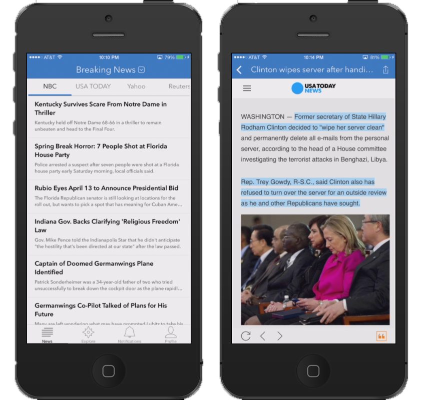
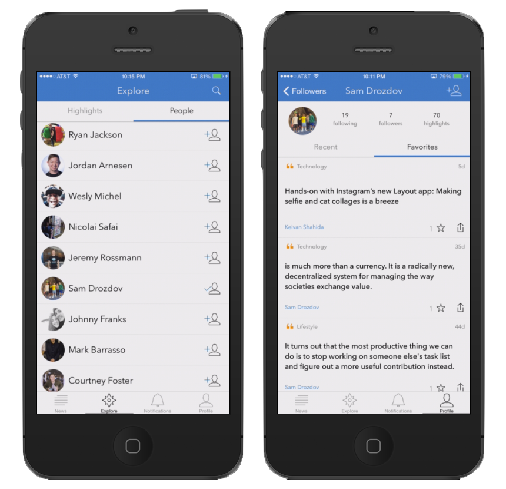

Too many times, we mindlessly read an interesting article on our phones and then end up forgetting it when we need the information the most. Stitch solves this problem by allowing users to seamlessly highlight as they read, easily locate important pieces of information, and quickly share with all our friends.


It was truly extraordinary to see this project develop from the ground up. Getting the features built for this app required me to learn a variety of new skills. I learned Javascript, learned how to utilize the Node.js framework, and even created a new customizable webview that allows users to manipulate text on the webpage. In my opinion, it has so far been well received and I'm excited to continue iterating on this project.